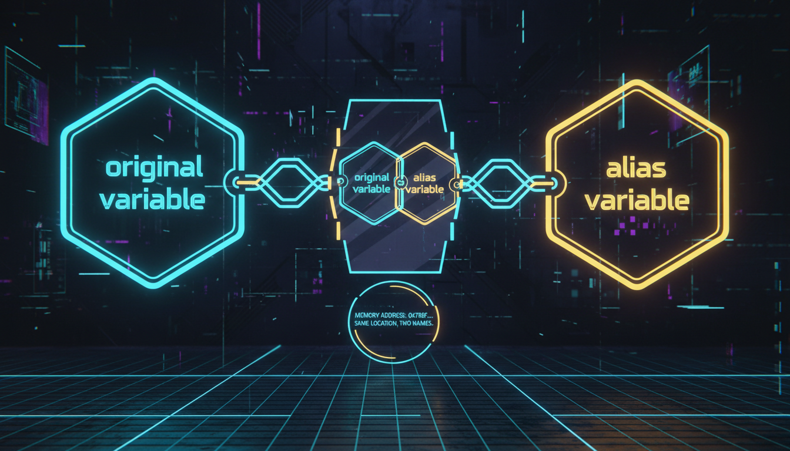

Оголошення посилань, відмінності від вказівників, const references

Посилання — це псевдонім (альтернативне ім'я) для існуючої змінної. Посилання завжди ініціалізується при створенні і не може бути змінено.
#include <iostream>
int main() {
int x = 10;
int& ref = x; // ref — посилання на x
std::cout << "x = " << x << std::endl;
std::cout << "ref = " << ref << std::endl;
ref = 20; // Зміна через посилання
std::cout << "x = " << x << std::endl; // 20
return 0;
}| Критерій | Посилання | Вказівник |
|---|---|---|
| Ініціалізація | Обов'язкова | Може бути nullptr |
| Перепризначення | Ні | Так |
| Синтаксис | Прямий (як змінна) | Потребує * |
| Null значення | Неможливе | nullptr |